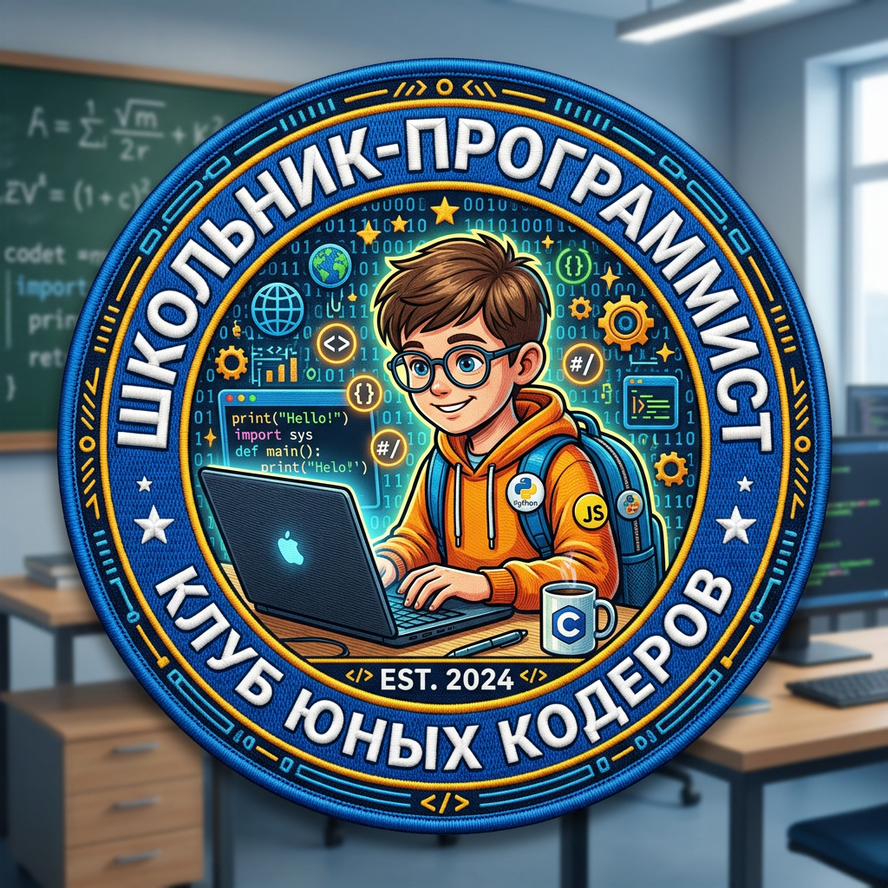

Интерактивный курс для детей 10–14 лет. Научим HTML, CSS, JavaScript и работе с GitHub.
Предварительная запись на курсНа курсе под руководством опытного преподавателя Купцова А. Б. дети освоят основы веб‑разработки через создание собственных игр и проектов. Каждое занятие — это практический результат, который можно показать друзьям и семье.
